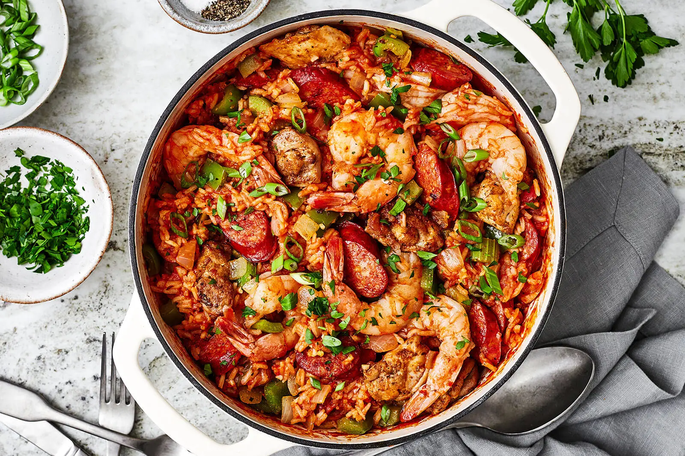

The cheapest way to serve a crowd of people, jambalaya is one of Louisiana's favorite dishes originating from the Cajuns from the southern parts of the country, where food was often scarce. At the time, there were many slaves in the country, so the word jambalaya supposedly derives from the French jambon, or ham, and the African aya, meaning rice.
Meal prep time : 35 minutes
Servings : 6